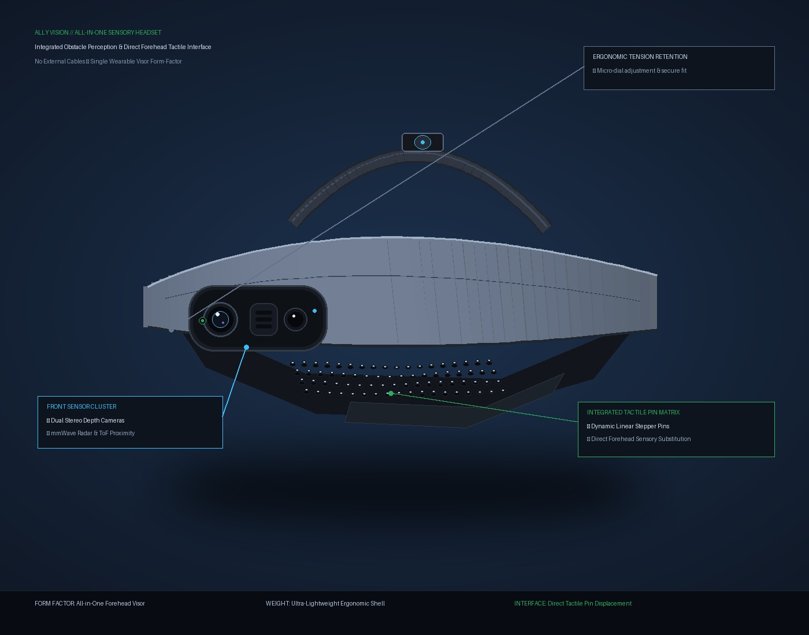
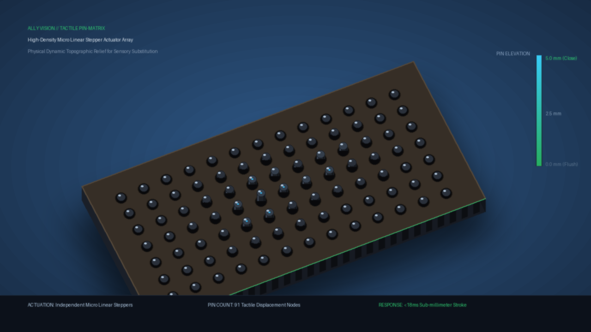
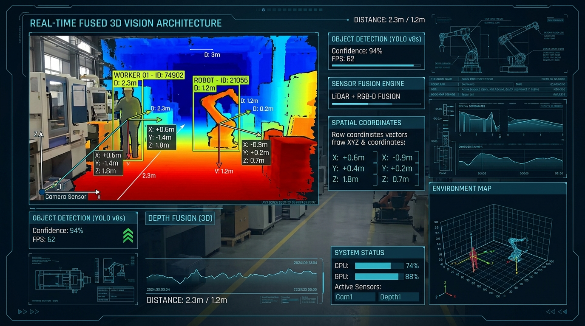
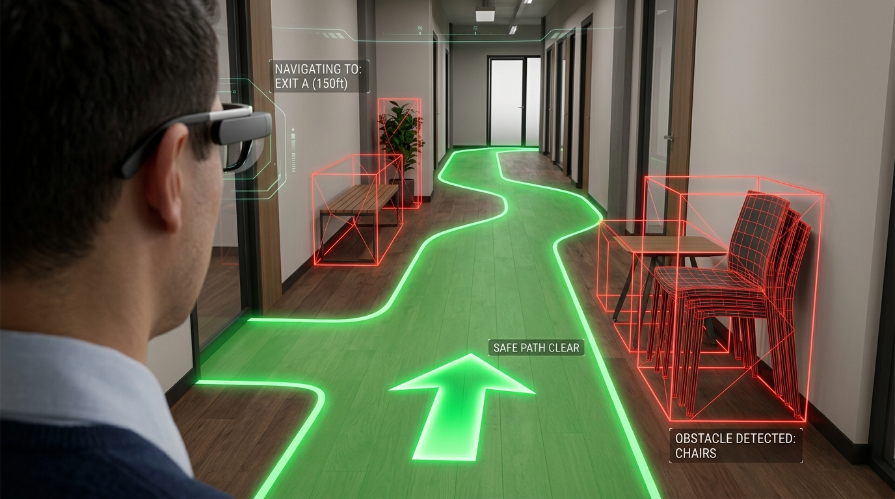
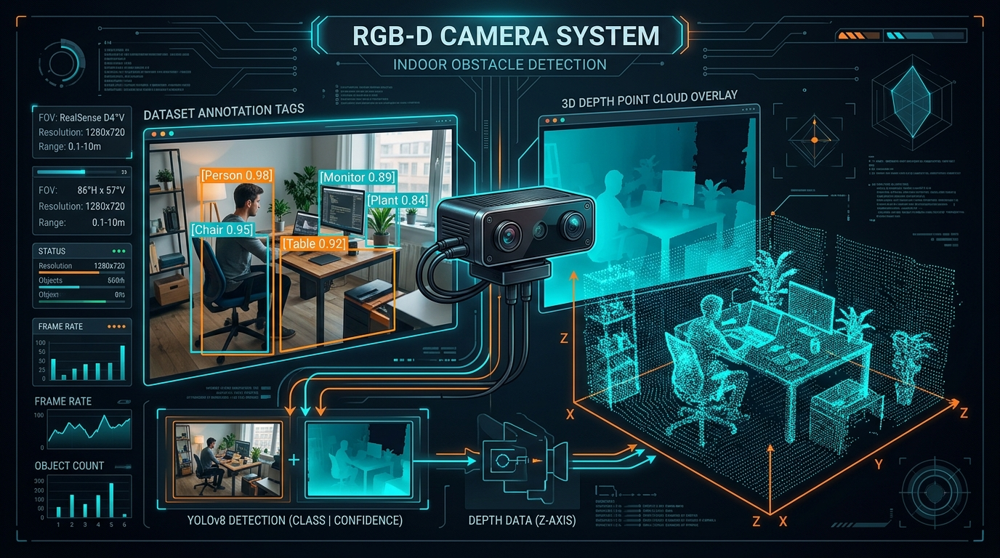
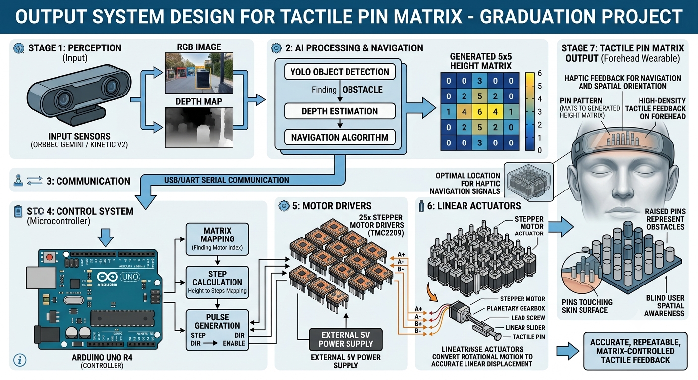

Visual-to-Tactile Spatial Navigation
Next-generation wearable visor translating 3D depth into physical micro-pin height profiles against the forehead. 100% Ear-Free, Hands-Free, and operating with sub-100ms real-time latency.
Interactive 5×5 Tactile Matrix Simulator
Select a live navigation scenario to see how the edge AI dynamically commands physical pin heights (Levels 0–5) to guide the user.
Proof of Concept Assets & Lab Data
Engineered at Egyptian-Chinese University (ECU) Faculty of Engineering

Wearable All-in-One Visor
Integrated RGB-D sensor housing, front tactile pad, counterbalanced battery strap.

Tactile Pin Matrix Relief (5mm Stroke)
Independent micro-stepper array mapping 3D obstacles into physical relief height profiles.

YOLOv8 + Pinhole 3D Projection
Real-time metric localization converting bounding boxes into calibrated camera-space coordinates.

RANSAC Safe Corridor (80cm Envelope)
3D ground plane extraction and clearance sector scanning for collision-free heading.

Navigation Hazard Dataset
2,000 custom annotated images in 8 obstacle classes optimized for Egyptian street and building mobility.

Ergonomics & 100% Ear-Free Modality
Leaves ears open to environmental sounds and traffic cues, eliminating the safety hazard of audio glasses.